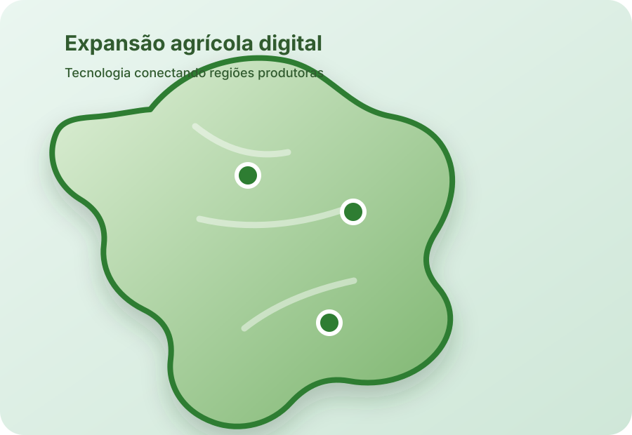
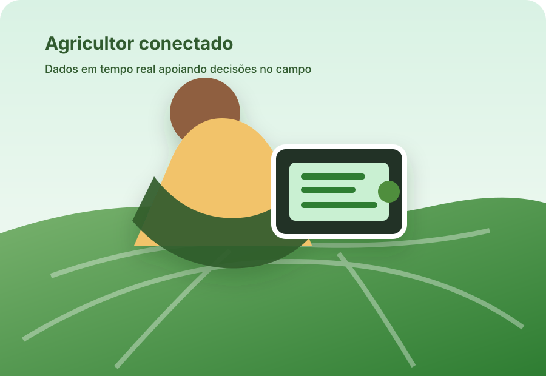

Drones Agrícolas
Mapeamento aéreo e pulverização de precisão para maior controle e menos desperdício.
AgroFuturo une inteligência artificial, drones, máquinas autônomas e agricultura conectada para transformar lavouras em operações mais produtivas, sustentáveis e digitais.

Visão de uma fazenda com máquinas inteligentes e gestão digital integrada.
Da pulverização inteligente aos sensores de solo, estas tecnologias já estão mudando o agronegócio no Brasil.
Mapeamento aéreo e pulverização de precisão para maior controle e menos desperdício.

Tratores e colheitadeiras autônomas entregam produtividade constante e operação de alto nível.

Dados de umidade, temperatura e nutrientes que apoiam decisões rápidas e precisas.

Integração entre sensores, máquinas e plataformas de gestão para uma fazenda digital completa.
Escolher, implantar e acompanhar soluções agrícolas exige dados confiáveis, suporte técnico e planejamento.
Conectar sensores e plataformas permite decisões rápidas, prevenção de perdas e ações pontuais conforme o clima e a condição do solo.
Equipamentos e sistemas precisam funcionar de forma integrada e estável no campo, com suporte técnico local e conectividade robusta.
Avaliar ganhos reais em produtividade e redução de custos garante que a tecnologia entregue resultado comercial.
Um plano simples para otimização do solo, acesso a dados e escolha do período ideal de plantio.
Combine análise de solo com adubação moderna e técnicas de conservação para raízes mais saudáveis.
Use posicionamento de alta precisão para reduzir sobreposição e aumentar a uniformidade de aplicação.
Escolha o melhor momento com base em dados climáticos e de solo para garantir safras mais estáveis.
A expansão do agronegócio acontece com a adoção de tecnologias em diferentes regiões, tornando áreas antes pouco produtivas mais eficientes e conectadas.

Do Cerrado ao Sul, soluções agrícolas digitais podem ser adaptadas às características de cada bioma e propriedade.
Com tecnologia aplicada em cada etapa, é possível produzir melhor, reduzir perdas e acompanhar a cadeia do campo à entrega.

Dados de campo garantem produtos rastreáveis, seguros e com qualidade certificada.

Integramos colheita e logística para reduzir perdas e manter a eficiência do campo à prateleira.

Relatórios visuais e informações em tempo real tornam a tomada de decisão mais rápida e segura.
A IA analisa clima, solo, histórico de safra e imagens do campo para prever problemas, recomendar ações e reduzir desperdícios.
Modelos estimam produção, perdas e necessidades de insumos com base em dados reais.
Sistemas identificam sinais no campo e recomendam ações antes que o problema se espalhe.
Rotas eficientes para máquinas e logística reduzem combustível, tempo e custo operacional.
A tecnologia melhora a tomada de decisão, o planejamento da produção e a competitividade do produtor rural.
Controle exato da aplicação de insumos e da operação de máquinas reduz falhas e aumenta a produtividade por área.
Monitoramento contínuo identifica riscos e minimiza perdas na produção com ações rápidas e localizadas.
Dados e automação permitem que máquinas trabalhem com maior eficiência e menos horas de operação desnecessárias.
Produtores conectados entregam mais qualidade e previsibilidade, conquistando melhores preços e clientes.
Redução de desperdício de insumos
Aumento de produtividade nas lavouras
Economia de água e energia
Todos os canais de contato ficam centralizados aqui para facilitar o atendimento.